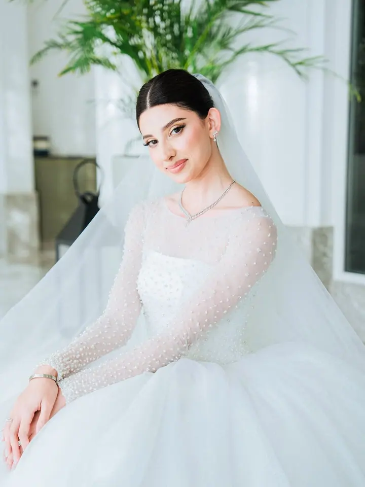
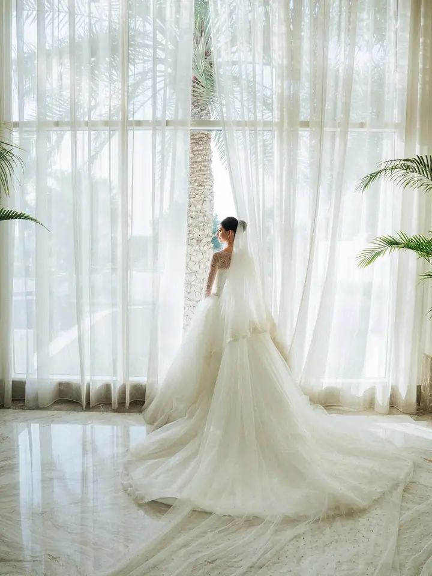
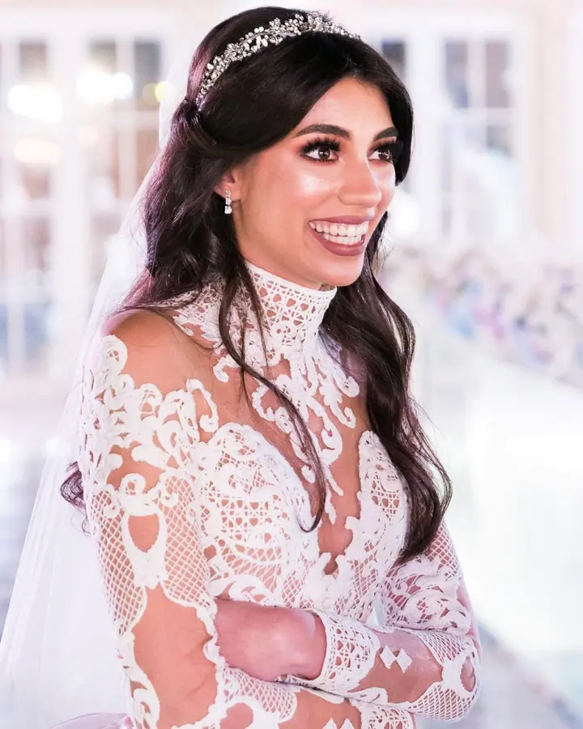
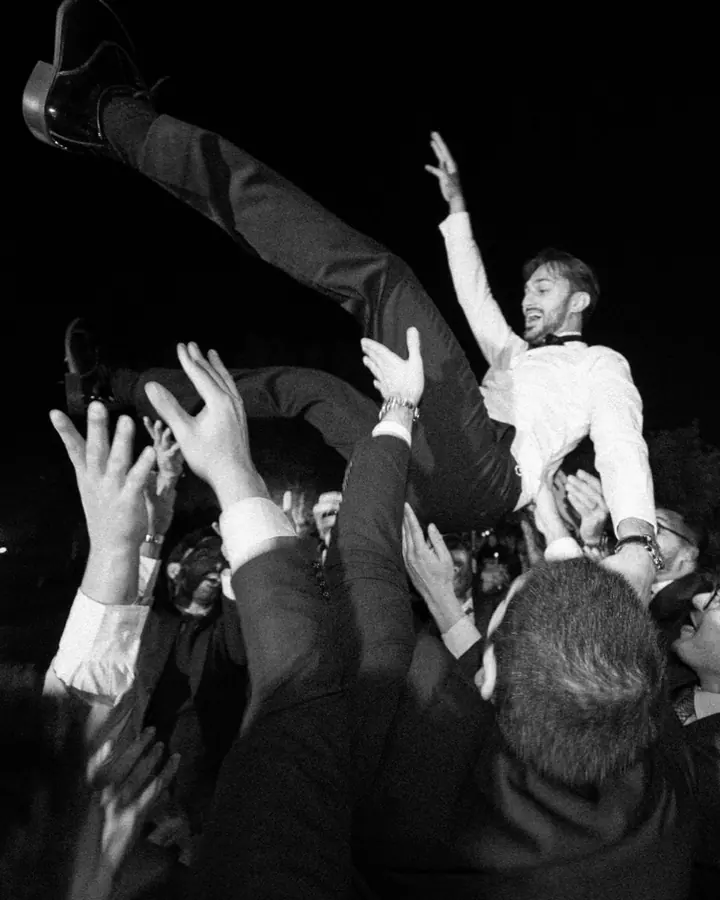
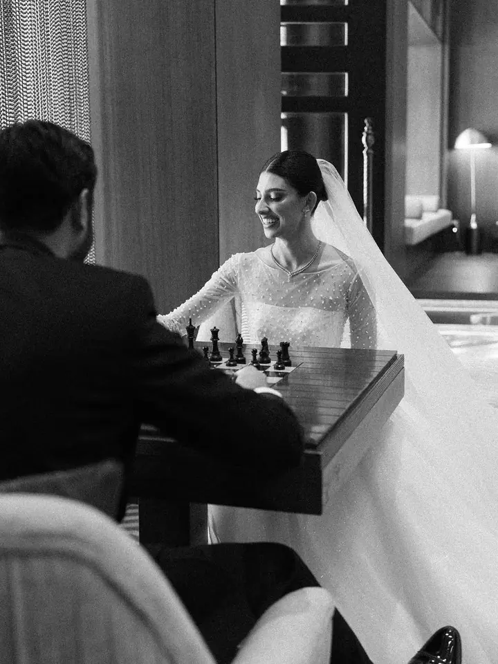

Svatby a nevěsty
Fotím celý svatební den i samostatné portréty nevěsty. Zajímají mě přípravy, obřad i chvíle, kdy se večer všichni pustí do tance.





Jmenuji se Bader Alwazeer a už 17 let fotím svatby, páry a nevěsty v Bahrajnu a Saúdské Arábii. Kromě svateb se věnuji i boudoir focení, módě a komerční fotografii.
Více o mně„Svatba, na kterou se budete rádi dívat i za roky“
— Bader Alwazeer
Fotím celý svatební den i samostatné portréty nevěsty. Zajímají mě přípravy, obřad i chvíle, kdy se večer všichni pustí do tance.
Klidné focení ve dvou, při kterém nemusíte pózovat. Hodí se před svatbou i jen tak pro vás.
Fotím módu, reklamní kampaně a také jídlo a nápoje pro restaurace a značky.
Diskrétní focení v soukromí, kde máte celou dobu pod kontrolou, co se fotí a jak. Výsledkem jsou jemné a sebevědomé portréty.
Fotografii se věnuji 17 let a za tu dobu se z ní stala moje práce i velká část života. Fotím hlavně v Bahrajnu a Saúdské Arábii, kde jsem byl u mnoha svateb, od velkých oslav po malé komorní obřady.
Kromě vlastní tvorby vedu svatební studio BK Weddings. Svatby jsou pro mě srdcovka, ale rád se pouštím i do módy, reklamních kampaní a fotografií jídla a nápojů. Každý z těch světů mě učí něco nového, co pak vracím zpátky do svatebních fotek.
Mimo focení sbírám fotoaparáty a učím se hrát na klavír. Obojí mi připomíná, že dobrý výsledek chce trpělivost a cit pro detail.
Napište mi termín, místo a co si od focení představujete. Rád vám odpovím a navrhnu, jak by focení mohlo vypadat.
Probereme průběh dne, důležitá místa a lidi, na kterých vám záleží. U boudoir focení spolu projdeme i to, v čem se budete cítit dobře.
Pracuji v klidu a nenápadně, abyste se mohli soustředit na sebe a své blízké. Když je potřeba, jemně vás navedu.
Fotky pečlivě vyberu a upravím v jednotném stylu. Dostanete je v online galerii, odkud si je snadno stáhnete.
Fotím hlavně v Bahrajnu a v Saúdské Arábii. Pokud plánujete svatbu jinde, napište mi a domluvíme se.
Ano, kromě celého svatebního dne fotím i samostatné bridal portréty, ať už před svatbou, nebo v jejím průběhu.
V klidu a diskrétně. Předem spolu probereme styl, oblečení i místo a fotky nikde nezveřejním bez vašeho souhlasu.
Ano, věnuji se také módě, komerční fotografii a fotografování jídla a nápojů. Na webu najdete i 360° virtuální prohlídky.
me@baderalwazeer.com
Bahrajn · Saúdská Arábie